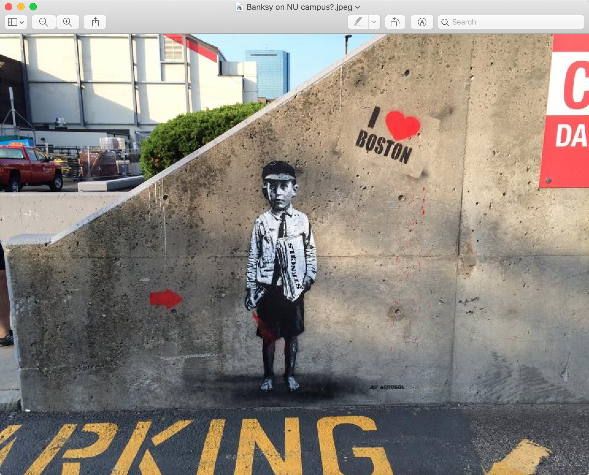
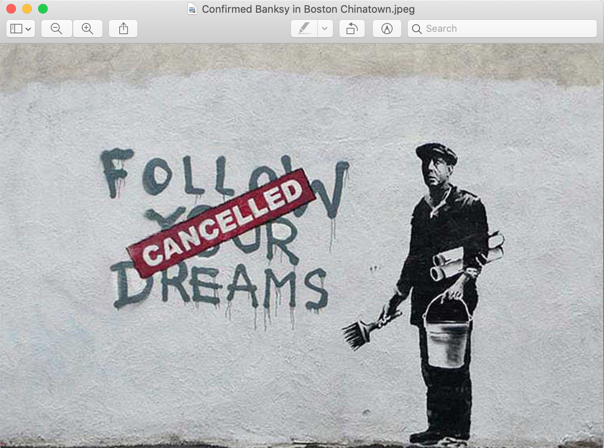

Banksy is a pseudonym for an anonymous English-based street artist that creates graffiti with themes of political commentary, satire, and dark humor. Banksy’s aesthetic is very recognizable. His signature stencil style was actually born out of the need to act quickly in fear of getting caught by the cops. There’s been speculation as to whether the piece on Northeastern’s campus is a true Banksy or not. It’s hard to tell because in his earlier years Banksy would actually sign his pieces but he doesn’t do this practice anymore. In the street art we can see a young boy holding a newspaper and a can of spray paint. The heading on the newspaper says “STENCILS” and red paint is spraying out of the can. Accompanying the boy is a red arrow to his left and a tag that says “I love Boston” on his right. The piece has all of the elements of a traditional Banksy; the classic black and white figure accompanied by red accents. And even though there may not be hard hitting political commentary, the piece still has that tongue-in-cheek style that Banksy is known for; the boy looks like he was caught spray painting on the wall (that he exists on) and the newspaper headline is a nod to Banksy’s classic technique. It’s hard to distinguish a true Banksy these days because ever since he has gained popularity he has amassed plenty of followers and imitators. Because of the acute stylistic elements, playful nature, as well as the fact that there was already a confirmed Banksy piece in Boston (found in 2010 on the side of a Shabu Shabu restaurant in Chinatown), I am going to assert that this piece is a Banksy creation.
 